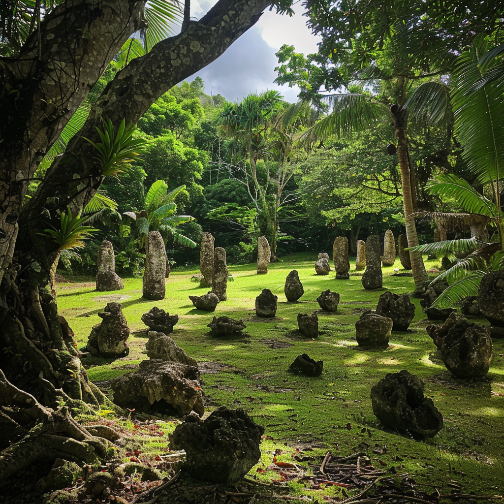
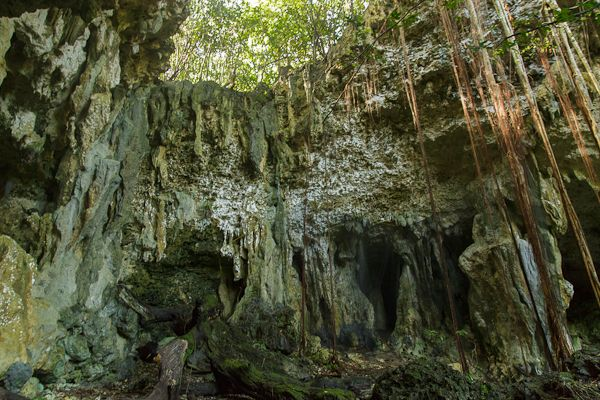
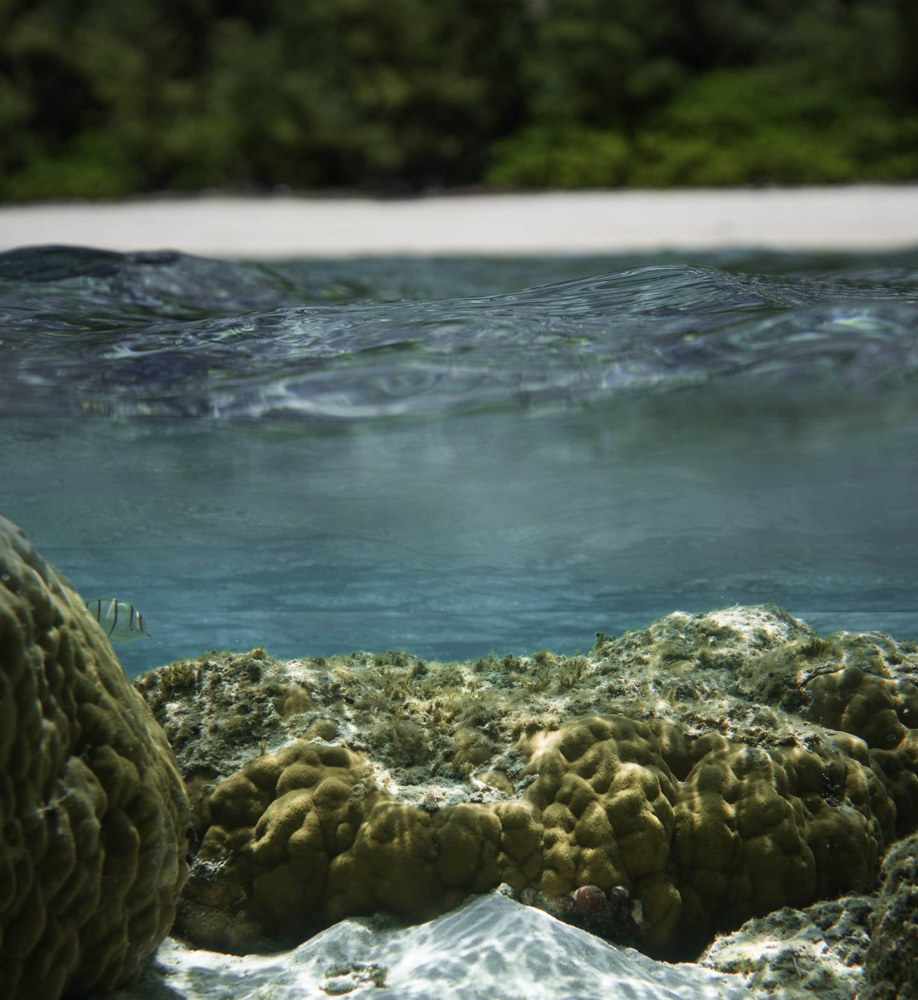

Embark on a journey through history and nature at Ritidian, a protected wildlife refuge renowned for its pristine beaches and ancient latte stones. Hike through lush forests, encounter rare wildlife species, and explore ancient Chamorro ruins dating back thousands of years. Ritidian is a treasure trove of natural wonders and cultural heritage waiting to be discovered.
1. Ruins of a Chamorro neighborhood dating back to 700 BCE, the wooden structures have long sense decayed leaving the fondational pilars or lattestones as some the only remainning evidence of this great civilization.
2. Several caves in this area have ancient petroglyphs, built in kitchens and barial sites with in these complex cave systems, most notable among these archeological sites is a lunar calender dating back to 500 BCE showing the change in the tides.
3. Beautiful protected wildlife refuge full of monitar lizards, endangered coco birds, mariana fruit bat, reef sharks, and many more animals inhabit this shoreline and the sorrounding jungle.